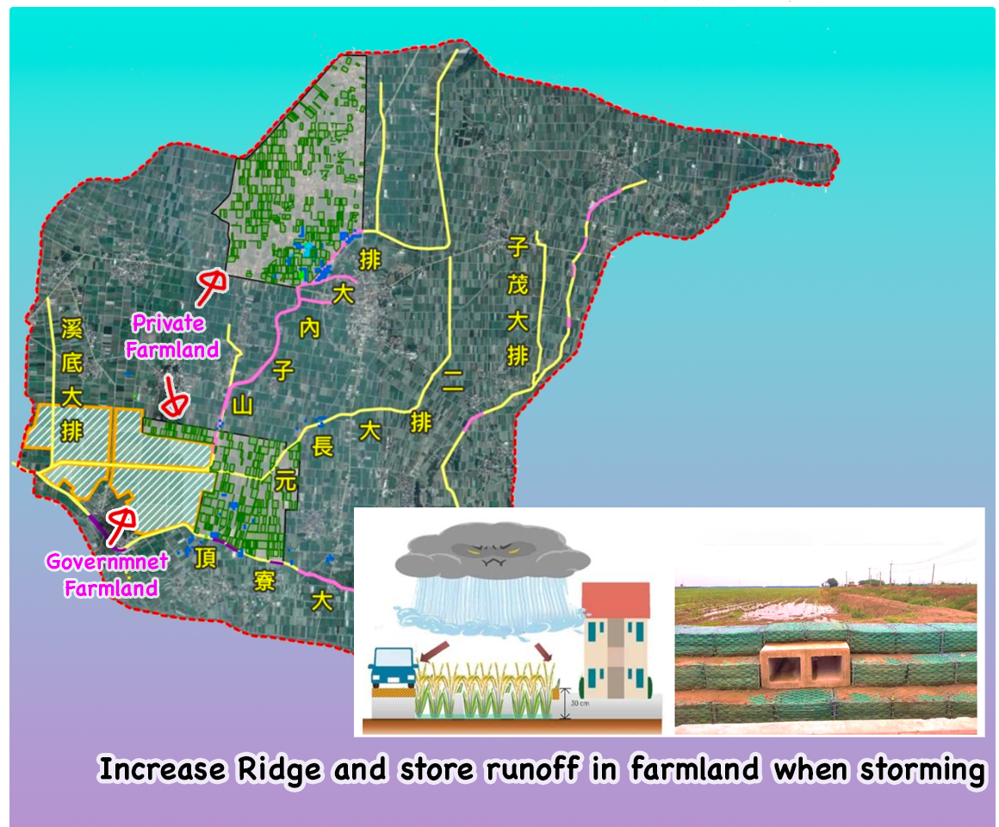
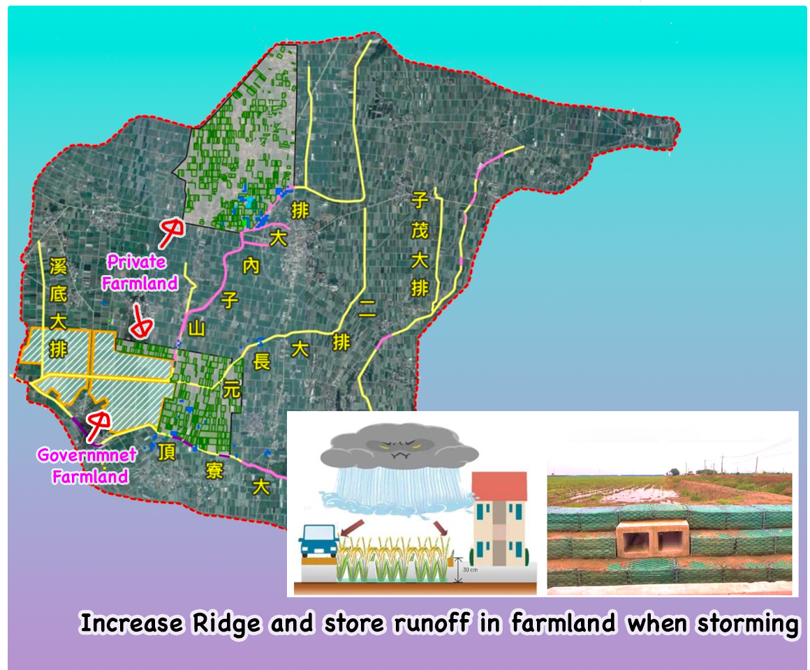

Flooding Mitigation in Wufang Village (2021~2023)


Wufang Village, a fishing community near the Donggang River, faces frequent flooding due to high tides and heavy rains. Its proximity to the shoreline worsens drainage conditions, especially during high tides, making the area vulnerable. Our team proposed solutions including pump stations, raised embankments, and automatic gates to prevent seawater inflow into fish ponds and city areas. My role involved simulating flood scenarios and analyzing potential solutions to guide decision-making. This experience reinforced my belief in the power of engineering to improve community resilience.


 
